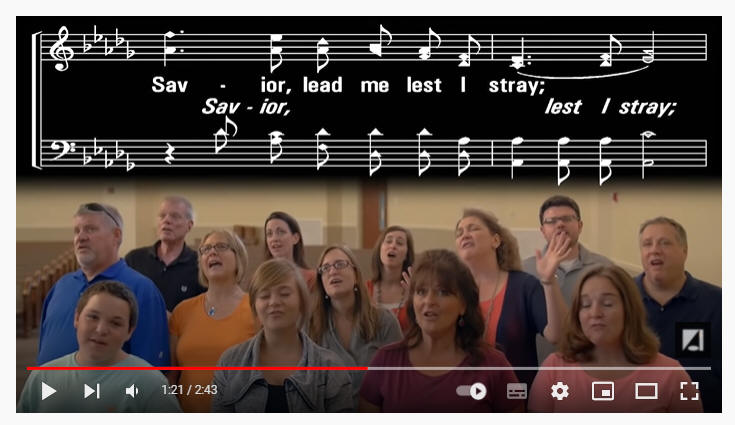

LX1941
Saviour, Lead Me, Lest I Stray (Lead
Me, Savior) _Frank
M. Davis
497求主领我
|
|
|
|
1 Savior, lead me lest I stray,
Gently lead me all the way;
I am safe when by Thy side,
I would in Thy love abide.
Refrain:
Lead me, lead me, Savior,
lead me, lest I stray;
Gently down the stream of time,
Lead me, Savior, all the way.
2 Thou the refuge of my soul,
When life's stormy billows roll;
I am safe when by Thy side,
All my hopes on Thee rely. [Refrain]
3 Savior, lead me, then at last,
When the storm of life is past;
To the land of endless day,
Where all tears are wiped away. [Refrain]
Source: One
Lord, One Faith, One Baptism: an African American ecumenical hymnal #234
|
497求主领我
1.求主领我免走错，体恤引导我全路；
主在身边极安全，愿在主爱中居住。
领我，领我，求主领我免走错；
恩领我安度岁月，直到进入主恩座。
2.世上风涛浪翻滚，主是我灵避难所，
一切希望惟靠主，主临近我便稳妥。
领我，领我，求主领我免走错；
恩领我安度岁月，直到进入主恩座。
3.求主引领我全生，直到今世风暴过，
使我安抵永明境，再无眼泪与灾祸。
领我，领我，求主领我免走错；
恩领我安度岁月，直到进入主恩座。
|
|
https://www.mred365.cn/szxg/7500.html
|
|
|
|

|
Short Name: |
Frank M. Davis |
|
Full Name: |
Davis, Frank M., 1839-1896 |
|
Birth Year: |
1839 |
|
Death Year: |
1896 |
Frank Marion Davis USA
1839-1896. Born at Marcellus, NY, he became a teacher and professor of
voice, a choirmaster
and a good singer. He
traveled extensively, living in Marcellus, NY, Vicksburg, MS, Baltimore, MD,
Cincinnati, OH, Burr Oak and Findley, MI. He compiled and published several
song books: “New Pearls of Song” (1877), “Notes of Praise” (1890), “Crown of
gold” (1892), “Always welcome” (1881), “Songs of love and praise #5” (1898),
“Notes of praise”, and “Brightest glory”. He never married.
John Perry
Tune Information
|
Title: |
[Savior, lead me lest I stray] (Davis) |
|
Composer: |
Frank M. Davis |
|
Incipit: |
53517 65432 65435 |
|
Key: |
C
Major |
|
Copyright: |
Public Domain |
[Savior, lead me, lest I stray]

求主领我
诗歌背景资料：
这首圣诗的词和曲是戴维思(Frank
M.Davis，1839-1896)作于1882年，当时他正在一艘自Baltimore赴Savannah渡轮的甲板上。
戴维思出生在纽约州的一个农家，他家有十个孩子，他是幺儿。他很早就开始作曲，是一位声乐和器乐的老师。戴维思经常巡回美国东部和南部各州，指导当地教会的诗班并教授声乐。1896年，他参加夏令会时，心脏病突发而逝。
他编纂了多本主日学诗歌，1877年出版的《歌中新珠》(New Pearls of Song)和《赞美音符》(Notes of
Praise)销售逾十万册。他作有一百多首诗歌及器乐谱。
https://www.mred365.cn/szxg/7500.html
INTRO.:
A song which asks the Lord to lead us in His righteousness so that we shall not
stray away from it is, "Savior, Lead Me Lest I Stray" (#99 in Hymns
for Worship Revised and #168 in Sacred
Selections for the Church). The text was written and the tune (Lead Me) was
composed both by Frank M. Davis, who was born on Jan. 23, 1839, near Marcellus
in Onondaga County, NY. During his life, he traveled extensively, living at
different times in Marcellus, NY; Vicksburg, MS; Baltimore, MD; Cincinnati, OH;
and Burr Oak and Findley, MI. A teacher of voice and instrumental classes, he
had charge of choirs in various places and was known as a fine soloist. His
first published composition appeared in Waverly Magazine. Some of his
compilations include Notes
of Praise, Brightest
Glory, and in 1877 New Pearls
of Song.
I have been able to find very little other information about Davis but several
of his hymns have been in our hymnbooks. He wrote music for Eden R. Latta’s
"Live For Jesus" and Mary Ann Kidder’s "Is My Name Written There." Also, his
songs, "O Rock In The Desert" and "Some Day We Shall Be Satisfied," appeared in
the Christian
Hymns books published by Gospel Advocate and his "Gliding
Away" was in some older books. Someone has suggested that he might have been
related to Marion Davis, who edited several hymnbooks used among churches of
Christ in the middle twentieth century, but I have not been able to confirm
this. "Savior, Leade Me Lest I Stray" was first published in the 1882 book Carols
of Joy. Davis never married and died on Aug. 1, 1896, at Chesterfield, IN.
Among hymnbooks published by members of the Lord’s church during the twentieth
century for use in churches of Christ, the song appeared in the 1921 Great
Songs of the Church (No. 1) and the 1937 Great
Songs of the Church No. 2 both edited by E. L. Jorgenson; the
1935 Christian
Hymns (No. 1), the 1948 Christian
Hymns No. 2, and the 1966 Christian
Hymns No. 3 all edited by L. O. Sanderson; the 1938/1944 New
Wonderful Songs edited by Thomas S. Cobb; the 1959 Majestic
Hymnal No. 2 and the 1978 Hymns
of Praise both edited by Reuel Lemmons; the 1963 Abiding
Hymns edited by Robert C. Welch; and the 1963 Christian
Hymnal edited by J. Nelson Slater. Today it may be found in
the 1971 Songs
of the Church, the 1990 Songs
of the Church 21st C. Ed., and the 1994 Songs
of Faith and Praise all edited by Alton H. Howard; the
1978/1983 Church
Gospel Songs and Hymns edited by V. E. Howard; and Praise
for the Lord edited by John P. Wiegand; in addition to Hymns
for Worship, Sacred
Selections, and the 2007 Sacred
Songs of the Church edited by William D. Jeffcoat.
The song is a request for the Lord to lead us.
I. Stanza 1 asks the Lord to lead us that we might not stray
"Savior, leade me lest I stray, Gently lead me all the way;
I am safe when by Thy side, I would in Thy love abide."
A. We need to be led because, like sheep, we are always in danger of straying
if we do not have someone to lead us: 1 Pet. 2.25
B. Jesus has a way in which He wants us to go, and it is a strait and narrow
way, so we need His leadership to follow it: Matt. 7.13-14
C. But in order for Him to be able to lead us, we must abide in Him and His
love: Jn. 15.4-7
II. Stanza 2 asks the Lord to lead us in safety
"Thou the refuge of my soul, When life’s stormy billows roll;
I am safe when Thou art nigh, All my hopes on Thee rely."
A. The Lord is the only true refuge for our souls to protect us when the storms
of life come raging: Ps. 46.1
B. Therefore, we can be assured that we will be safe when He is nigh to us and
we are nigh to Him: Ps. 12.1-5
C. Because Christ came to bring us this refuge from God that we might be
protected, all our hopes on Him rely: Heb. 6.18-20
III. Stanza 3 asks the Lord to lead us until the storm of life is past
"Savior, lead me, then at last, When the storm of life is past
To the land of endless day, Where all tears are wiped away."
A. At last refers to the time of death, which is an appointment for all men to
keep: Heb. 9.27
B. Our prayer should be that even in death the Lord will lead us to the land of
endless day where we shall have everlasting life: Matt. 25.35 & 46, Mk. 10.30
C. And if we have followed Him faithfully in this life, we can have the
confidence that we shall be with Him where all tears are wiped away: Rev. 21.1-4
CONCL.:
The chorus repeats the request that the Lord would lead us all the way.
"Lead me, lead me, Savior, lead me, lest I stray;
Gently down the stream of time, Lead me, Savior, all the way."
I need to remember that the way is not in myself (Jer. 10.23). I cannot put my
trust in worldly wisdom or human philosophy for salvation (1 Cor. 1.21, Col.
2.8). If I want to please God here and have an eternal home with Him, I must
daily look to Him and ask, "Savior, Lead Me Lest I Stray."
https://hymnstudiesblog.wordpress.com/2008/10/22/quotsavior-lead-me-lest-i-strayquot/